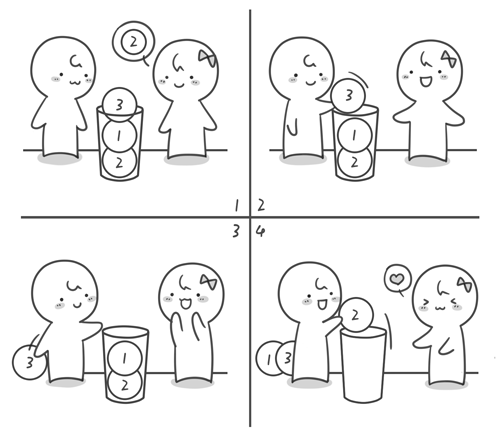

【坐在马桶上看算法】算法5：解密回文——栈
上一节中我们学习了队列，它是一种先进先出的数据结构。还有一种是后进先出的数据结构它叫做栈。栈限定只能在一端进行插入和删除操作。比如说有一个小桶，小桶的直径只能放一个小球，我们现在向小桶内依次放入2号、1号、3号小球。假如你现在需要拿出2号小球，那就必须先将3号小球拿出，再拿出1号小球，最后才能将2号小球拿出来。在刚才取小球的过程中，我们最先放进去的小球最后才能拿出来，而最后放进去的小球却可以最先拿出来。这就是后进先出，也可以称为先进后出。

我们生活中还有很多这样的例子，比如我们在吃桶装薯片的时候，要想吃掉最后一片，就必须把前面的全部吃完（貌似现在的桶装薯片为了减少分量，在桶里面增加了一个透明的抽屉）；再比如我们浏览网页时候需要退回到之前的某个网页，我们需要一步步的点击后退键。还有手-枪的弹夹，在装子弹的时候，最后装的一发子弹，是被第一个打出去的。栈的实现也很简单，只需要一个一维数组和一个指向栈顶的变量top就可以了。我们通过变量top来对栈进行插入和删除操作。
这种特殊的数据结构栈究竟有哪些作用呢？我们来看一个例子。“xyzyx”是一个回文字符串，所谓回文字符串就是指正读反读均相同的字符序列，如“席主席”、“记书记”、“aha”和“ahaha”均是回文，但“ahah”不是回文。通过栈这个数据结构我们将很容易判断一个字符串是否为回文。
首先我们需要读取这行字符串，并求出这个字符串的长度。
char a[101]; //101是一个估算值，只需比待读入的字符串长度大即可 int len; gets(a); len=strlen(a);
如果一个字符串是回文的话，那么它必须是中间对称，我们需要求这个字符串的 中点，即：
mid=len/2-1;
接下来就轮到栈出场了。
我们先将mid之前的部分的字符全部入栈。因为这里的栈是用来存储字符的，所以这里用来实现栈的数组类型是字符数组即char s[101]; 初始化栈很简单，top=0;就可以了。入栈的操作是top++;s[top]=x; （假设需要入栈的字符存储暂存在字符变量x中）其实可以简写为s[++top]=x;
现在我们就来将mid之前的字符依次全部入栈。这里循环要0开始，因为刚才读取字符串使用了gets()函数，读取的第一个字符存储在s[0]中，随后一个字符存储在s[len-1]中。
for(i=0;i<=mid;i++) { s[++top]=a[i]; }
接下来进入判断回文的关键步骤。将当前栈中的字符依次出栈，看看是否能与mid之后的字符一一匹配，如果都能匹配则说明这个字符串是回文字符串，否则这个字符串就不是回文字符串。

for(i=mid+1;i<=len-1;i++) //其实这里并不一定是mid+1，需要讨论字符串长度的奇偶性 { if (a[i]!=s[top]) { break; } top--; } if(top==0) printf("YES"); else printf("NO");
最后如果top的值为0，就说明栈内所有的字符都被一一匹配了，那么这个字符串就是回文字符串。完整的代码如下。
#include <stdio.h> #include <string.h> int main() { char a[101],s[101]; int i,len,mid,next,top; gets(a); //读入一行字符串 len=strlen(a); //求字符串的长度 mid=len/2-1; //求字符串的中点 top=0;//栈的初始化 //将mid前的字符依次入栈 for(i=0;i<=mid;i++) s[++top]=a[i]; //判断字符串的长度的是奇数还是偶数，并找出需要进行字符匹配的起始下标 if(len%2==0) next=mid+1; else next=mid+2; //开始匹配 for(i=next;i<=len-1;i++) { if(a[i]!=s[top]) break; top--; } //如果top的值为0，则说明栈内的所有的字符都被一一匹配了 if(top==0) printf("YES"); else printf("NO");
getchar();getchar(); return 0; }
可以输入以下数据进行验证
ahaha
运行结果是
YES
栈还可以用来进行验证括号的匹配。比如输入一行只包含“()[]{}”的字符串，形如“([{}()])”或者“{()[]{}}”请判断是否可以正确匹配。显然上面两个例子都是可以正确匹配的。“([)]”是不能匹配的。有兴趣的同学可以自己动手来试一试。
堆栈最早由Alan M. Turing（艾伦·图灵）于1946年提出，当时为了解决子程序的调用和返回。艾伦·图灵这个大帅哥可是个大牛人，图灵奖就是以他的名字命名的。如果你对他感兴趣不妨去读一读他的传记《艾伦•图灵传：如谜的解谜者》。